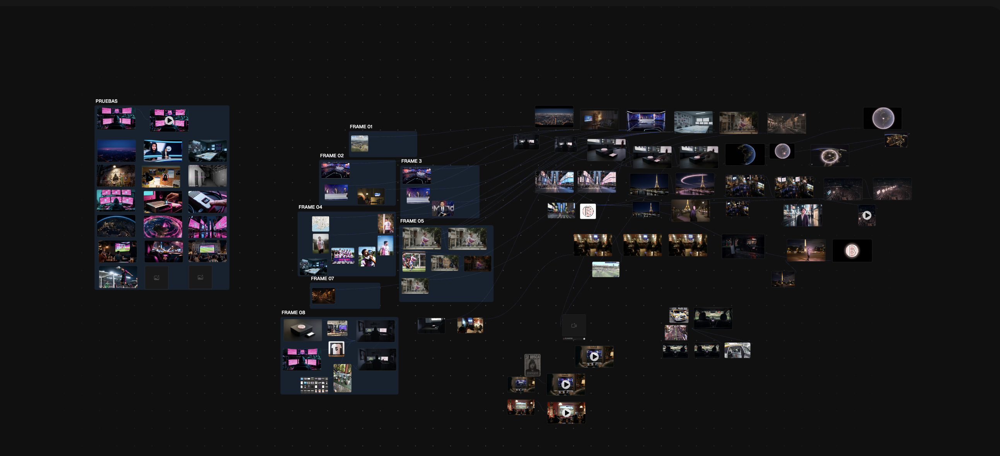

1. Construcción del Storyboard (Freepik Spaces) 1. Storyboard Construction (Freepik Spaces)

2. Referencias clave para consistencia 2. Key references for consistency
.png)
.png)
.png)
3. Frames y Keyframes (El Frame 1 como locación) 3. Frames and Keyframes (Frame 1 as location)


motion_prompt_flow.prompt
> /generate_motion --model flow --style cinematic
Between the provided initial and final frames, create a 5–6 second cinematic close-up animation of the device. Keep the composition, camera angle, desk, device and round pastel pink button with the “B” emblem and vertical stripes exactly as shown in the keyframes, without adding or removing objects.
Animate a realistic human hand entering the frame from the side, holding the slim cartridge and sliding it fully into the front slot of the device during the first part of the clip. After the cartridge is fully inserted, animate the hand moving to the top of the circular button and pressing it down until the scene matches the final frame: the button slightly depressed and glowing more intensely. Add a small, natural camera micro-shake and brief increase in button glow at the exact moment of the press, then let the glow settle to match the final image.
Do not modify the design of the device, the button, the desk or the background beyond the natural light response. Keep lighting and colors consistent with the keyframes, with only subtle changes caused by the button glow. No new UI elements, no text or logos, no cartoon or anime style, no exaggerated glitch or VFX.
> /status: processing_animation... _